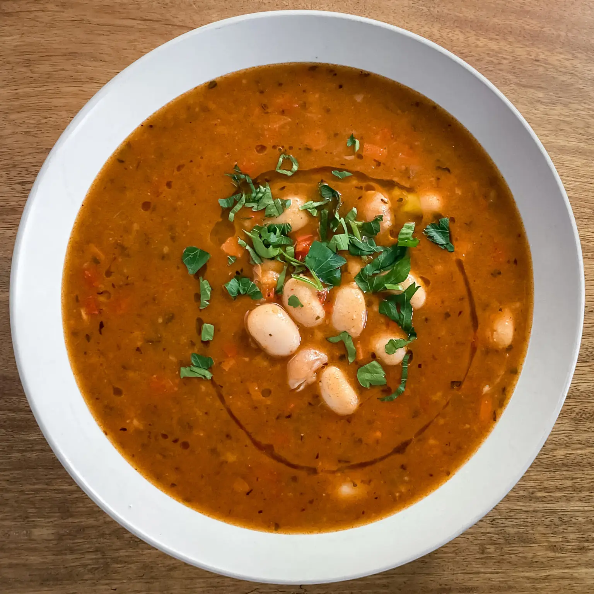
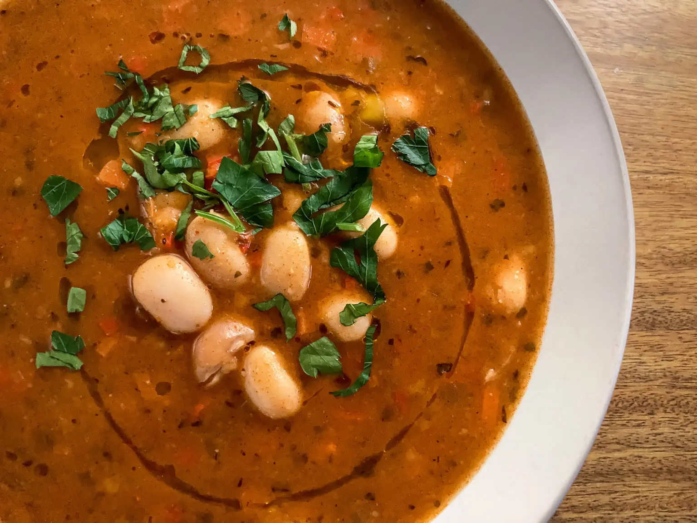

Soups

Jani Me Fasule
- Albanian white bean soup, is a treat, not only but especially in winter. This rich soup is packed full of flavor but so easy to make.
Ingredients
- White Beans
- 1 White Onion
- 1/2 Red Bell Pepper
- 1 Carrot
- 4 tbsp Olive Oil
- 1.5 tsp Oregano
- 1.5 tbsp Tomato Paste
- 2 tsp Paprike Powder
- 3 tbsp Flour
- Vegatable Stock
Steps
- Soak the beans overnight, rinse them and cook them in unsalted water until soft. This takes more or less than an hour, depending on the beans.
- Finely chop the onion, bell pepper, and carrot.
- Heat olive oil in a pot and sauté the veggies on low to medium heat until they are soft and the onions are translucent.
- Then add the tomato paste, oregano, and paprika powder. Stir.
- Next add the flour, stir, and cook for about 1 minute.
- Now it's time to add the vegetable stock powder, water, the bay leaf as well as salt and some pepper. Also, add the beans at this point.
- Cook for about 30 minutes and maybe season with pepper and some more salt.
- Serve with some fresh bread.
